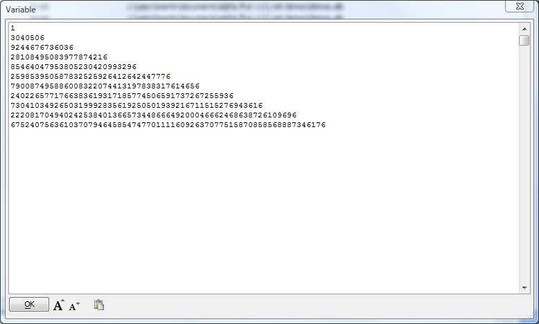

DotNet Example: Big Integers
This sample demonstrates loading, registering and using a .NET class from a DLL in the standard location. It also demonstrates using a constructor to load a value into a .NET class when it is created.Xbasic lacks native support for infinite-precision integer arithmetic, but the .NET Framework has it. Now you can perform calculations with arbitrarily long integers from Alpha Anywhere, using the .NET System.Numerics.BigInteger class. (This sample may look suspiciously similar to Writing Xbasic wrapper classes for .NET classes. Don't let that distract you.)
Copy the following script, paste it into Alpha Anywhere, and run it.
dim Sv as DotNet::Services
dim assy as DotNet::AssemblyReference
assy.filename = DotNetPath()+"System.Numerics.dll"
dim flag as L = Sv.RegisterClass("Numerics", "BigInteger", "System.Numerics.BigInteger", assy)
if .NOT. flag then
ui_msg_box("BigInteger Demo","BigInteger class not registered")
end
end if
dim ctr as n
dim Result as C
dim BigInt As Numerics::BigInteger
Base = new Numerics::BigInteger(3040506)
dim ans(0..10) as c
For ctr = 0 To 10
ans(ctr) = BigInt.Pow(Base, ctr).ToString()
Result = Result + ans(ctr) + crlf()
next
showvar(Result)The result will be:

Note that we have been careful about keeping the BigInteger values in BigInteger variables; to see the results in Alpha Anywhere, we converted to string form using the .NET Framework, BigInt.Pow(Base, ctr).ToString().
Also note the use of the new keyword to create an instance of the Numerics::BigInteger class and set an initial value in a single statement. This syntax is called using a constructor.
We had to specify the file path of the DLL for the System.Numerics namespace because its assembly is not preloaded.
See also
MSDN documentation on the BigInteger class.NET Framework Support in Alpha Anywhere
DotNet::AssemblyReference
DotNet::Services
CreateObject Method
CallStaticFunction Method
ConstructGenericTypeName Method
GetStaticProperty Method
SetStaticProperty Method
RegisterClass Method
RegisterAssembly Method
RegisterNamespace Method
GenerateWebServiceClientFromURL Method
GenerateWebServiceClientFromWSDL Method
Preloaded .NET Classes
Writing Xbasic wrapper classes for .NET classes
DotNetPath Function
DotNet Examples